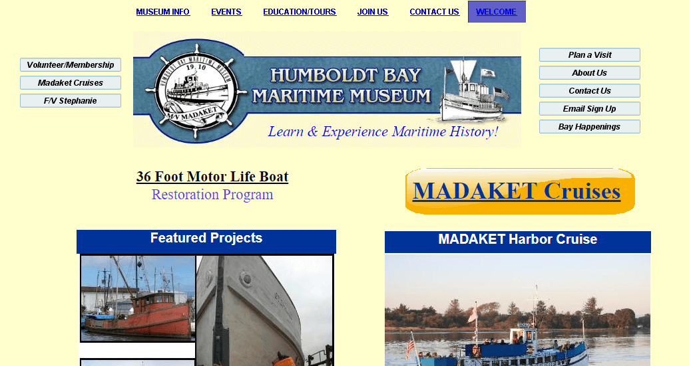
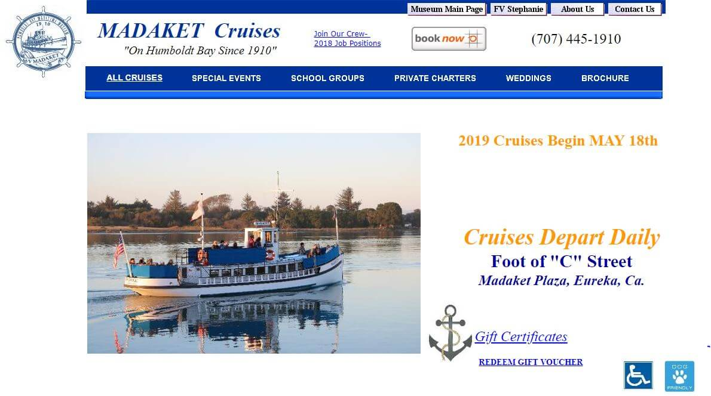

Staying Afloat: A case of Bad Navigation
This week I wanted to take a look at how web structure can be a bit hard to get right. This small website for a maritime museum off the coast of california is a great example of how good intentions can be marred by poor design. The Humboldt Bay Maritime Museum has a few problems in its design and aesthetic but that is not my focus in this analysis. Rather the navigation is the most systemic issue as it actively prevents ease of use.
So what makes a website great to navigate? In “Don’t Make Me Think!” the idea of billboards and breadcrumbs is essential in communicating how we navigate digital spaces. As there are no landmarks in the digital realm we have to create our own to help guide users. The Navbar, home page, and navpath are able to tell us a lot about where we are on a website. If these elements are not well executed then users will have to rely on our visual design to guide them. Those visual cues can help but are not enough on their own.
As a museum is still a business the first priority of the Humboldt Bay Museum should be to attract customers to their location. Next would be to provide information about the location, offers, and events. The issue I believe, is in actually finding that information. Let’s look at some criterion to see how things can be improved:
Is it clear what the site is about?
Right from the start it's easy to tell that this website has a lot to do with boats. The service they offer however is a bit vague. The company banner states that it is a museum but the links and content don’t provide much further context. Is this a restoration service? Or a tour? The other pages reinforce the idea that this is a small museum website but the home page lacks the presence it needs to get the message across.
Does each page tell me how they relate to the one I've been to?
As I move around Humboldt’s site I begin to feel a little lost at sea. Some of this is due to the inconsistent styling; shifting between formats or even whole schemes on certain pages. The shifting banner logo makes it unclear if it can take me back to the home page. The double set navbars are unintuitive as some functions are unique and others universal. The fact that they shift around the page makes it even harder to discern what page relates to what. A lack of a breadcrumb trail is mostly an ok oversight as most pages are only one or two steps deep. This array of oddities fosters a distrust of the position im in inside the site.
Is every page clear in purpose and context?
The styling of the site actually has a surprising place in this step. If we change styling dramatically then users can feel as if they have left the site entirely without doing so. Nowhere is this more clear than in the Madaket cruise section. The website changes color scheme, format, positioning, and content almost wholesale. This sudden change creates an unnecessary dichotomy within the pages questioning some purposes’. The rest of the pages are usually self explanatory and single serving though often overstep each other. For example, if I want to email the business do I click the link to “About us”, “Contact us”, or “Email Sign Up”?
 This is still the same website yet we seem to have a second home page in a new style!Do I have a sense of direction or scale?
The amount of layers that this site presents to us is very light. Each page on the navbar usually only has one or two layers to it making the hierarchy very flat. The glaring exception is once again the Madaket Cruise page which seems to start a whole new website. This prevents me from actually getting lost as there is only so far I can go in the site structure.
Boarding Up The Leaks
How do we help out this little museum website so that navigation isn’t such a mess? Well first I would create a style guide that defines exactly how the site is supposed to look. The lack of consistency is the biggest bugbear here as it is the root of many related issues. Next, I would reduce the number of navbar options but constrict them to one set of well defined tabs. This would make each page serve a greater purpose as they can be responsible for more content. Finally, a more unique home page would make a excellent improvement to retaining visitors. Likewise, the style guide should unify the other sections of the website into a simpler format.
Give a Thumbs up if you liked the article!